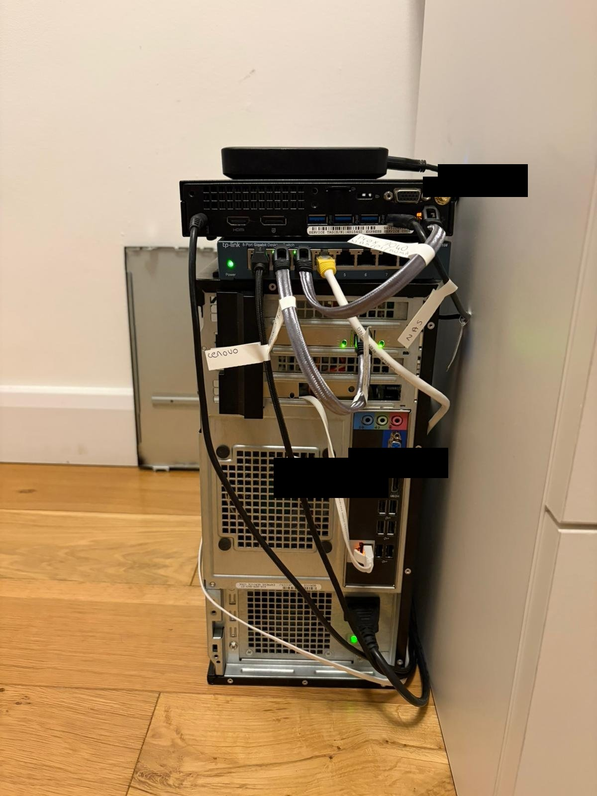

A self-hosted, privacy-focused lab built on second-hand hardware - running real services behind a proper firewall.
The lab runs across three Dell OptiPlex machines and provides network-level ad blocking, encrypted VPN routing for all LAN traffic, self-hosted password management, media serving, and remote access - all on second-hand hardware. The network is segmented behind a dedicated OPNsense firewall VM. All LAN traffic is routed through a Mullvad WireGuard tunnel, and remote access is handled exclusively via Tailscale with no ports open to the internet.
Three Dell OptiPlex machines, each with a dedicated role.
Runs OPNsense as a VM. Built-in NIC (eno1) is the WAN interface; PCIe Intel 82574L NIC (enp2s0) is the LAN interface. Neither Proxmox bridge has a host IP - management is via Tailscale only. Acts as the sole gateway between the internet and the rest of the network.
Primary Proxmox node hosting the main service VMs - Pi-hole, Samba NAS, Vaultwarden, and Uptime Kuma. All services run in isolated VMs with static IPs on the 10.0.0.0/24 subnet. Reachable via Tailscale subnet router.
Will host Jellyfin for self-hosted media serving. Planned as part of the Proxmox cluster expansion, with VM migration and high availability across all three nodes once set up.
The Sky router provides WAN and feeds into OPNsense. All devices connect through an unmanaged switch behind the LAN NIC on the 390. OPNsense is the sole gateway.
All services run in isolated VMs on the 7040. Each has a static IP and is reachable locally or via Tailscale.
DNS server and network-wide ad blocker. Pushed to all devices via DHCP option 6 through Dnsmasq. Prevents DNS queries reaching the ISP.
● LiveNetwork file share running on the Ubuntu VM. NAS drive mounted via fstab with NTFS-3G. Accessible from any device on the LAN.
● LiveSelf-hosted Bitwarden-compatible password manager running in Docker. Exposed via Caddy reverse proxy with Tailscale HTTPS certificates. Not accessible from the internet.
● LiveService monitoring dashboard running in Docker. Tracks uptime for all VMs and services with alerting.
● LiveSelf-hosted media server planned for the OptiPlex 7050. Will be accessible via Tailscale once the media node is set up.
○ PlannedFirewall VM on the 390. Handles WAN/LAN routing, Mullvad WireGuard tunnel, DHCP, firewall rules, and Tailscale bypass policy.
● LiveTailscale is the only way into the network from outside. No ports are open on OPNsense.
The Ubuntu VM advertises the 10.0.0.0/24 subnet over Tailscale. Any device on the tailnet can reach local services by their 10.0.0.x IP without needing Tailscale installed on each individual VM.
Tailscale HTTPS certificates are issued for the Vaultwarden VM's ts.net hostname. This allows the Bitwarden mobile app to trust the connection without certificate warnings.
The OptiPlex 390 Proxmox node has no local management IP by design. The Proxmox UI on that node is only reachable via Tailscale, eliminating any local attack surface for the firewall host.
Security is a core part of the lab's design, not an afterthought. The network is built around a zero-trust approach - no ports are exposed to the internet, all remote access is authenticated, and traffic is encrypted end-to-end. The lab is continuously reviewed and hardened as it evolves.
Planned expansions across networking, services, infrastructure, and security.
SHA-256: 5e4da0678a772b9814cdb06c3fda342d65146ae407041360ee1481cea7efb554
SHA-256: c47e92c367405114673696b3457e99aaa2acfdb88a3f5fca02e309e2423717ee